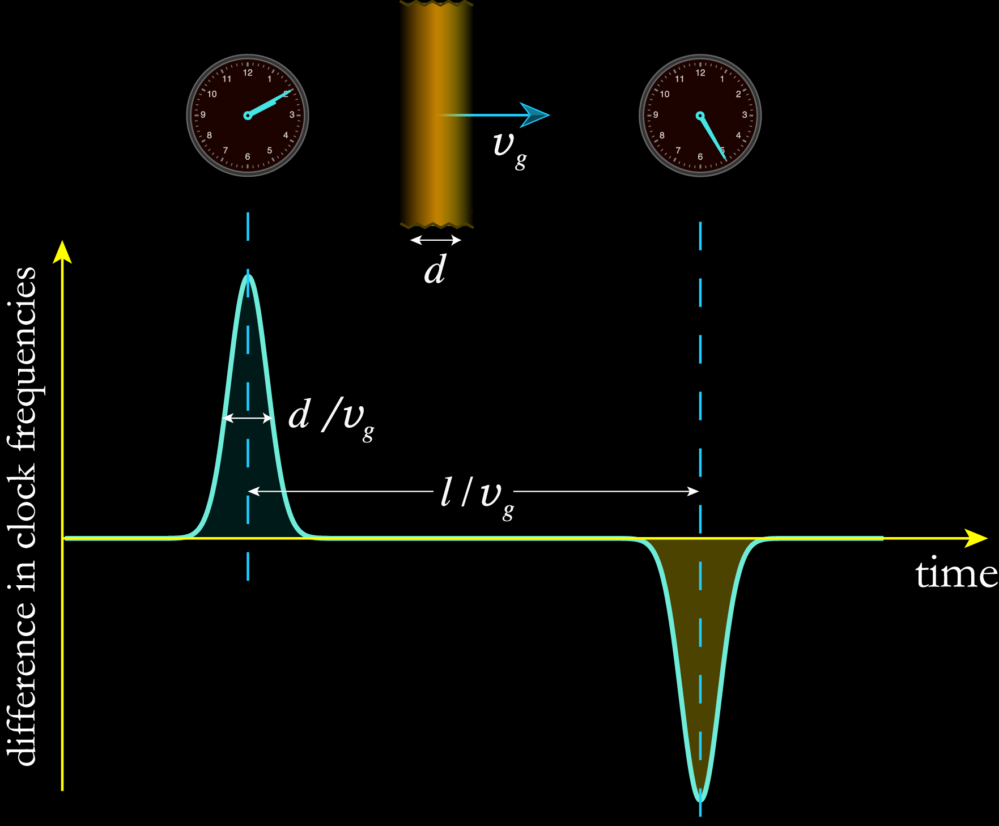

# The big long title of the talk ## _A subtitle_ <br> <br> ### Conference or worksjhop name #### University of Conference Location #### 24 March 2026 <br> <br> <!-- <div> <font size="4"> * PhysRevLett.124.081101 (2020)<br> * NJP 22, 093010 (2020)<br> * PhysRevLett.124.081101 (2021)<br> </font> </div> <br> --> <div class="r-stretch"></div> ### Benjamin M. Roberts <br> School of Mathematics and Physics, University of Queensland, Australia <br> * Slides [broberts.io/slides](https://broberts.io/slides/) <br> <br> <img src="img/uq-logo.svg" width="25%"> Supported by: ARC and <img src="img/BQI.png" width="20%"> <br>
# About Us <div style="text-align: left; float: left; width: 50%"> <br> <br> <div class="fragment"> <h2>High-precision atomic theory</h2> <h3> • Heavy atoms for precision physics</h3> <h3> • Atomic parity violation</h3> <h3> • Probing nuclear and fundamental physics</h3> </div> <br> <div class="fragment"> <h2>Low-mass dark matter</h2> <h3> • Mass range: $\sim$10 GeV down to $10^{-23}$ eV</h3> </div> <br> <div class="fragment"> <h2>AMPSCI</h2> <h3> • Open-source atomic structure code</h3> <h3> • One- and two-valence systems</h3> <h3> • <a href="https://ampsci.dev">ampsci.dev</a></h3> </div> </div> <div style="display: flex; flex-direction: column; align-items: center; float: right; width: 50%"> <br> <br> <img src="https://broberts.io/images/Group-20251113-IMG_6722.jpg" width="90%" style="border-radius: 8px;"> <div style="flex-grow: 1"></div> <br> <br> <img src="img/uq-logo.svg" width="75%" style="margin-top: auto; padding-top: 40px;"> </div>
# Template Title One ## Subtitle: some context here x <br><br> <div style="text-align: left; float: left; width: 55%"> <h2>Main Heading</h2> <h3> • First bullet point goes here</h3> <h3> • Second bullet point goes here</h3> <h3> • Third bullet point goes here</h3> <br><br> <div style="font-size: 1.5em"> $$\mathcal{H} = \sum_i \frac{{\color{cyan}\mathbf{p}_i^2}}{2m} + {\color{orange}V(\mathbf{r}_i)}$$ </div> </div> <div style="text-align: center; float: right; width: 43%"> <img src="img/K-approx2.png" width="85%"><br> <font size="4">[Stand-in figure citaion]</font> <br><br> <h3>Figure caption or<br>secondary text block</h3> </div>
# Template Title Two ## Subtitle: another context <br><br> <div style="text-align: left; float: left; width: 55%"> <h2>Main Heading</h2> <h3> • First bullet point goes here</h3> <h3> • Second bullet point goes here</h3> <h3> • Third bullet point goes here</h3> <br><br> <div class="fragment" style="font-size: 1.5em"> $$\sigma = \frac{{\color{cyan}g^4} \mu^2}{\pi (q^2 + {\color{orange}m_\phi^2})^2}$$ </div> </div> <div style="text-align: center; float: right; width: 43%"> <img src="img/keck-ao.jpg" width="85%"><br> <font size="4">[Stand-in citaion]</font> <br><br> <div class="fragment"> <h3>• Secondary point one</h3> <h3>• Secondary point two</h3> </div> </div>
# Template Title Three ## Subtitle: yet another framing <br><br> <div style="text-align: center; float: left; width: 50%"> <p></p><br> <font size="4">[Stand-in figure]</font> </div> <div style="text-align: left; float: right; width: 48%"> <h2>Main Heading</h2> <h3> • First bullet point goes here</h3> <h3> • Second bullet point goes here</h3> <h3> • Third bullet point goes here</h3> <br><br> <div class="fragment" style="font-size: 1.5em"> $$\Gamma = \frac{1}{\tau} = \frac{\omega^3 {\color{cyan}|d_{if}|^2}}{3\epsilon_0 \hbar c^3}$$ </div> <br> <div class="fragment"> <h3>Secondary observation here</h3> </div> </div>
# Template Title Four ## Subtitle: key result or derivation <br><br> <div style="text-align: left; float: left; width: 55%"> <h2>Main Heading</h2> <h3> • First bullet point goes here</h3> <h3> • Second bullet point goes here</h3> <h3> • Third bullet point goes here</h3> </div> <div style="text-align: center; float: right; width: 43%"> <img src="img/spectra.png" width="95%"><br> <font size="4">[Stand-in]</font> </div> <div style="clear: both; text-align: center; width: 100%" class="fragment"> <br> <br> <br> <div style="font-size: 1.5em">$$W_{fi} = \frac{2\pi}{\hbar} {\color{cyan}|\langle f | \hat{V} | i \rangle|^2} \, {\color{orange}\rho(E_f)}$$</div> <br> <h3>Central equation — secondary text block explaining its terms</h3> </div>
# Conclusion <div style="text-align: left; float: left; width: 50%"> <br> ### Dark matter with atomic phenomena: * Electron scattering, absorptionf, fifth-force searches * Fundamental symmetry violations (EDM, PNC) <br> <br> ### Ultralight dark matter * Scalar coupling DM-SM: shift in atomic levels * Monitor frequencies with atomic clocks <br> ### Rencontres du Vietnam, ICISE, 2025 <br> ### Benjamin M. Roberts _University of Queensland, Australia_ <br> * Slides [broberts.io/slides](https://broberts.io/slides/) <br><br> <img src="img/uq-logo.svg" width="75%"> </div> <div style="text-align: left; float: right; width: 50%"> <br> <br> <br> * Caddell, Flambaum, BMR, [Phys. Rev. D **108**, 083030 (2023)](https://journals.aps.org/prd/abstract/10.1103/PhysRevD.108.083030) <br> * Savalle _et al._, [Phys. Rev. Lett. **126**, 051301 (2021)](https://link.aps.org/doi/10.1103/PhysRevLett.126.051301) <br> * BMR _et al._, [Nature Comms. **8**, 1195 (2017)](http://www.nature.com/articles/s41467-017-01440-4) <br> * BMR _et al._, [N. J. Phys. **22**, 093010 (2020)](https://iopscience.iop.org/article/10.1088/1367-2630/abaace) <br> * Hees, Do, BMR, Ghez _et al._, [Phys. Rev. Lett. **124** 081101 (2020)](https://link.aps.org/doi/10.1103/PhysRevLett.124.081101) <br> * Filzinger, Caddell _et al._, Phys. Rev. Lett. (in press), [arXiv:2312.13723](http://arxiv.org/abs/2312.13723) <br><br> <br><br> <img src="img/BQI.png" width="45%"> </div>
<br><br><br><br><br> <br><br><br><br><br> <h1>Extra</h1>
# Ultralight Dark Matter <br><br> $$\rho_{\rm DM}\simeq 0.4 ~ \frac{\rm GeV}{{\rm cm}^3}$$ <br> ## Mass decreases $\implies$ number density increases: ## Classical boson field (e.g., axions, scalars) <br> <div style="text-align: left; float: right; width: 80%"> <div class="fragment fade-in"> <h3> 1. No interaction: oscillation: $\phi = \phi_0 \cos(m_\phi \, t)$ </h3> $$\phi_0^2\propto \rho_{\rm DM}$$ </div> <h3 class="fragment fade-in"> 2. Interactions: clumps </h3> <br> <h3 class="fragment fade-in"> 3. Also: constant build-up (local over-densities) </h3> <br> <h2 class="fragment fade-in"> $\implies$ Classical field: quantum sensors (clocks) $\phantom{\implies}$ </h2> </div>